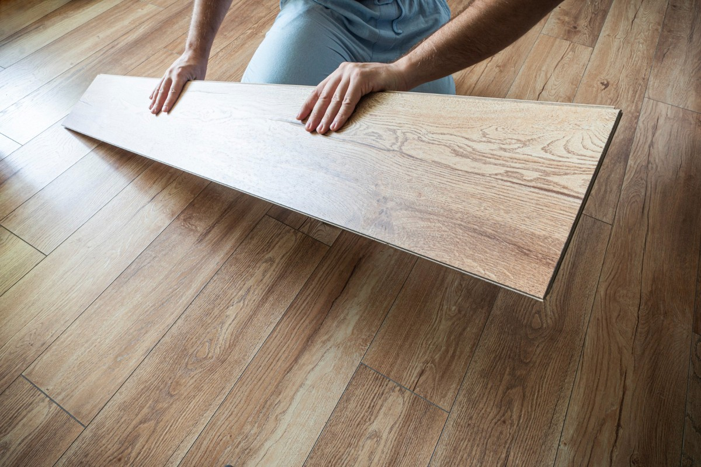

Bessere Akustik
Textile Böden reduzieren Tritt- und Raumgeräusche spürbar.
Teppichböden in München
Teppichboden verbessert Raumakustik, Komfort und Wärmegefühl. Wir beraten zur passenden Qualität und verlegen sauber in Wohn- und Arbeitsräumen.
Textile Bodenbeläge
Teppichboden eignet sich besonders für Schlafräume, Kinderzimmer, Büros und Bereiche, in denen Akustik wichtig ist.
Wir beraten zu Florhöhe, Beanspruchung, Farbe, Pflege und Verlegeart und achten auf saubere Kanten und Anschlüsse.

Komfort & Akustik
Wir wählen textile Beläge passend zur Nutzung: wohnlich und weich für private Räume oder strapazierfähig für Büroflächen.
Textile Böden reduzieren Tritt- und Raumgeräusche spürbar.
Angenehmes Laufgefühl für Schlafräume, Kinderzimmer und Wohnbereiche.
Von robuster Büroqualität bis zu wohnlicher Bahnenware.
Teppicharten

Ruhige Flächenwirkung für Wohnräume und Schlafbereiche.
Praktisch für Büros, flexibel austauschbar und robust.
Mehr Trittsicherheit und Komfort auf Treppen und Laufwegen.

Ablauf
Wir messen, prüfen Übergänge und besprechen Nutzung und gewünschte Wirkung.
Sie erhalten passende Empfehlungen für Qualität, Farbe und Verlegeart.
Belag, Kanten, Leisten und Anschlüsse werden sauber fertiggestellt.
Beratung in München
Wir beraten zu Qualität, Farbe, Akustik und Pflege und erstellen ein passendes Angebot.
FAQ
Besonders für Schlafräume, Kinderzimmer, Büros und Räume mit Wunsch nach besserer Akustik.
Ja, vor allem in Büros oder stark genutzten Bereichen, weil einzelne Elemente ausgetauscht werden können.
Ja, Treppenbeläge sind möglich und verbessern Komfort und Trittsicherheit.
Das hängt von Qualität und Nutzung ab. Wir empfehlen passende Materialien und Pflegehinweise.
Ja, inklusive Prüfung und Vorbereitung des Untergrunds.